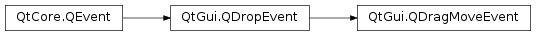

QDragMoveEvent¶
Inherited by: QDragEnterEvent
Synopsis¶
Functions¶
- def
accept(r) - def
answerRect() - def
ignore(r)
Detailed Description¶
The
PySide2.QtGui.QDragMoveEventclass provides an event which is sent while a drag and drop action is in progress.A widget will receive drag move events repeatedly while the drag is within its boundaries, if it accepts
drop eventsandenter events. The widget should examine the event to see what kind ofdatait provides, and call thePySide2.QtGui.QDragMoveEvent.accept()function to accept the drop if appropriate.The rectangle supplied by the
PySide2.QtGui.QDragMoveEvent.answerRect()function can be used to restrict drops to certain parts of the widget. For example, we can check whether the rectangle intersects with the geometry of a certain child widget and only callPySide2.QtGui.QDropEvent.acceptProposedAction()if that is the case.Note that this class inherits most of its functionality from
PySide2.QtGui.QDropEvent.
-
class
PySide2.QtGui.QDragMoveEvent(pos, actions, data, buttons, modifiers[, type=DragMove])¶ Parameters: - data –
PySide2.QtCore.QMimeData - actions –
PySide2.QtCore.Qt.DropActions - type –
PySide2.QtCore.QEvent.Type - pos –
PySide2.QtCore.QPoint - modifiers –
PySide2.QtCore.Qt.KeyboardModifiers - buttons –
PySide2.QtCore.Qt.MouseButtons
Creates a
PySide2.QtGui.QDragMoveEventof the requiredtypeindicating that the mouse is at positionposgiven within a widget.The mouse and keyboard states are specified by
buttonsandmodifiers, and theactionsdescribe the types of drag and drop operation that are possible. The drag data is passed as MIME-encoded information indata.Warning
Do not attempt to create a
PySide2.QtGui.QDragMoveEventyourself. These objects rely on Qt’s internal state.- data –
-
PySide2.QtGui.QDragMoveEvent.accept(r)¶ Parameters: r – PySide2.QtCore.QRectThe same as
PySide2.QtGui.QDragMoveEvent.accept(), but also notifies that future moves will also be acceptable if they remain within therectanglegiven on the widget. This can improve performance, but may also be ignored by the underlying system.If the rectangle is empty, drag move events will be sent continuously. This is useful if the source is scrolling in a timer event.
-
PySide2.QtGui.QDragMoveEvent.answerRect()¶ Return type: PySide2.QtCore.QRectReturns the rectangle in the widget where the drop will occur if accepted. You can use this information to restrict drops to certain places on the widget.
-
PySide2.QtGui.QDragMoveEvent.ignore(r)¶ Parameters: r – PySide2.QtCore.QRectThe opposite of the accept(const
PySide2.QtCore.QRect&) function. Moves within therectangleare not acceptable, and will be ignored.
© 2018 The Qt Company Ltd. Documentation contributions included herein are the copyrights of their respective owners. The documentation provided herein is licensed under the terms of the GNU Free Documentation License version 1.3 as published by the Free Software Foundation. Qt and respective logos are trademarks of The Qt Company Ltd. in Finland and/or other countries worldwide. All other trademarks are property of their respective owners.